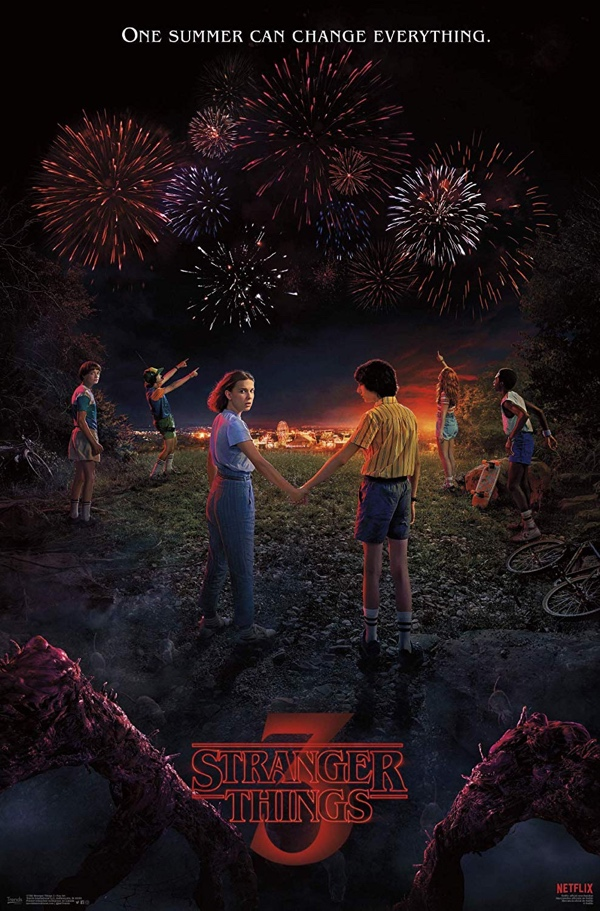
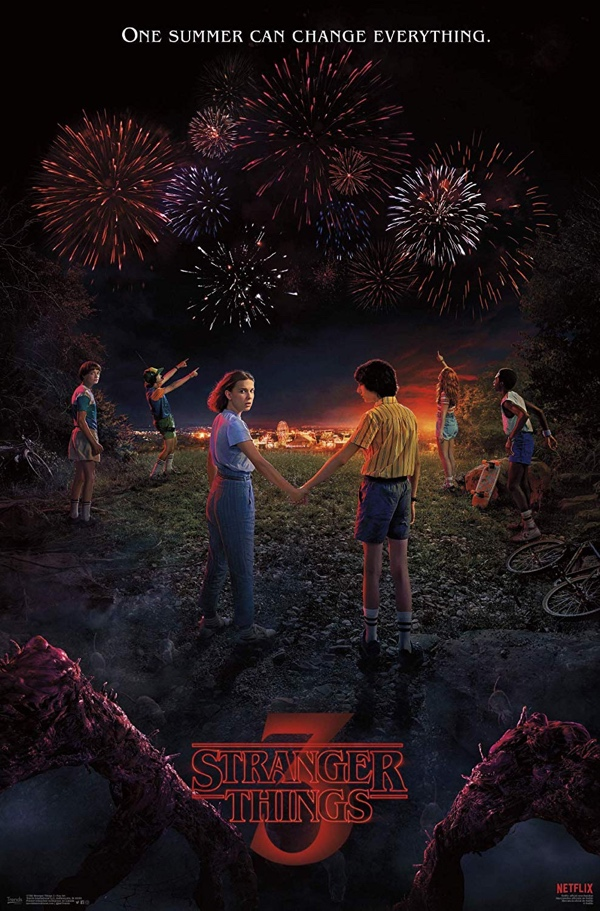
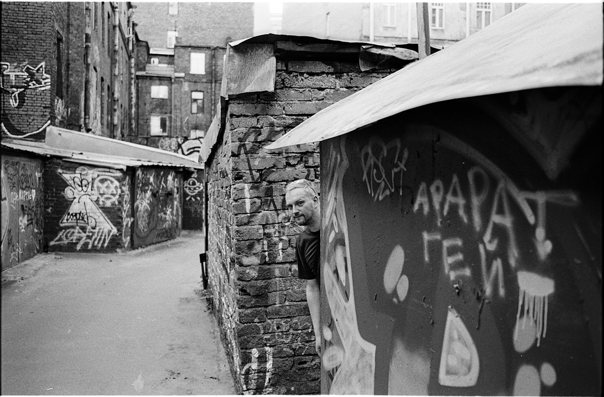
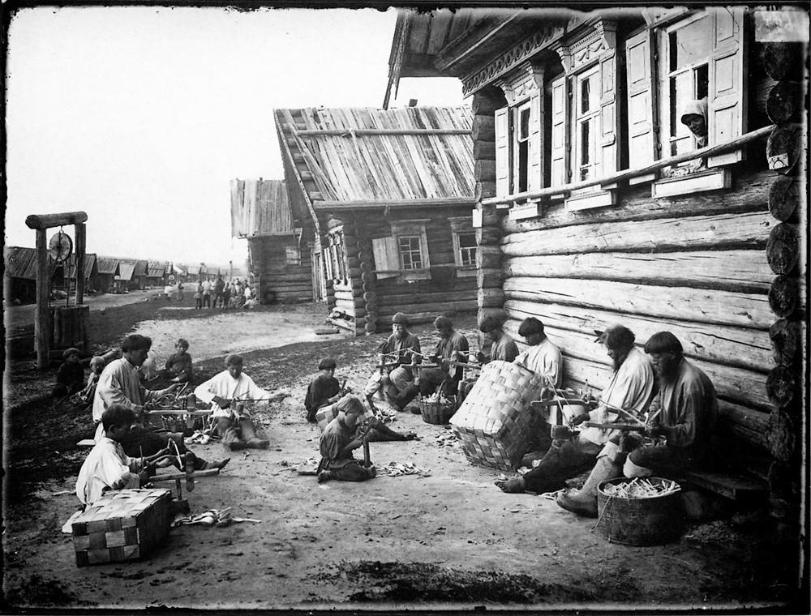

Stranger Things 3

А какой у них крутой третий сезон получился! Кайф!

А какой у них крутой третий сезон получился! Кайф!
Если коротко, то "все хорошо". Но если вдруг вам этого мало, то вот у Кати есть специальный инстаграм, в котором она регулярно делится подробностями.
Эта заметка будет интересна только владельцам айфонов.
Хочу рассказать об одной офигенской фиче плеера для подкастов Castro — Sideloads. По-русски ее можно перевести что-то типа "сторонний контент", а смысл ее в том, что в папку iCloud Drive'а можно загрузить свой аудио файл и слушать его в плеере, как и обычный эпизод подкаста, включая всякие плюшки вроде ускоренного проигрывания и вырезания долгих пауз. Аудио книги я не слушаю, поэтому долгое время я эту фичу игнорировал, ибо стороннего контента у меня не наблюдалось. Но тут совершенно случайно я выяснил, что этот сторонний контент можно создать самому, причем из любого ютубовского ролика, и для этого не нужно плясать с бубном, а достаточно просто нажать одну кнопку и подождать пока Castro скачает видео, вырежет из него звук и добавит в нужную папку самостоятельно! А поскольку я переодически смотрю какие-то интервью, в которых почти никогда ничего не происходит (познер, или дудь или что-то еще), и, собственно, смотреть их вовсе необязательно (и часто скучно), то это оказалась какая-то совершенно киллер-фича для меня, на которую я даже не пожалел денег (да, за киллер-фичи иногда приходится платить).
К слову, я мог бы купить YouTube Premium и наверное делать все то же самое, но что-то у меня не зашла эта тема с отдельным приложением для ютуба, увы.

Картинка про Сашу и еще какого-то незнакомого чувака.
Про Полину я ничего не знал до этого момента, а у Дмитрия на самом деле очень крутой инстаграм.
Все думал, что написать по поводу десятилетия этого блога, который начался с заметки о рождении Тимура. А пока я думал, на свет появился Захар, так что жизнь идет, господа, и спасибо, что читаете)
Для интересующихся ттх: 3280/52
Милая такая французская попса. И еще.
Вот иногда ты просто перестаешь что-то делать. Или кто-то перестает. Вот делал он, делал, а потом перестал. Варил с утра кофе и вдруг перестал. Ездил на велосипеде и вдруг перестал. Шутил как-то остроумно, а тут взял и все — перестал.
Или вот делал человек фотографии, цепляющие такие картинки, а ты смотрел на них — ну и немного так охуевал с того, какие они крутые. Вот, думал ты, как так он может, откуда у него такое — понимание или наоборот — любопытство, откуда у него такое — ну, чувство?
А потом, а потом — раз — и человек перестал это делать. Нет его фотографий больше, да и человека самого — нет — пропал. Нет, нет, он не умер, с ним все в порядке, просто он — перестал.
Грустно.
Кайфовые чуваки!

Я давно знаю про Прокудина-Горского и его работы (фото, фильм), а вот про Максима Дмитриева я, к стыду своему, не знал ничего. А, меж тем, его фотографии тем примечательны, что представляют из себя не портретную фотографию, доминировавшую в то время (даже у П-Г большинство снимков сделаны в жанре портрета), а сцены из повседневной жизни, о которых мы знаем преимущественно из исторической и художественной литературы, то есть чуть ли не первые репортажные снимки России того времени.